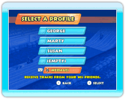
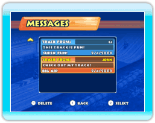
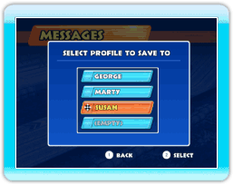
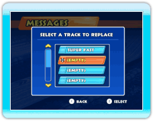

Si alguien te ha enviado un circuito mediante WiiConnect24, aparecerá un sobre junto a la opción MESSAGES (mensajes) en la pantalla SELECT A PROFILE (selección de perfil).
Selecciona la opción MESSAGES (mensajes) en la pantalla de selección de perfil.

Elige el circuito que quieres guardar entre las opciones de la lista de mensajes.

Selecciona el perfil en el que deseas guardar el circuito.

Selecciona el espacio para circuitos en el que desees guardar el circuito.
Nota: No podrás editar ninguno de los circuitos que recibas de tus amigos Wii.